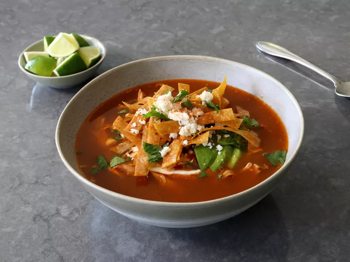

chicken tortilla soup

Description
Chicken tortilla soup is a warm and flavorful Mexican dish that combines tender shredded chicken with a rich, spiced broth made from tomatoes, onions, garlic, and a variety of seasonings like cumin and chili powder. It typically features a mix of vegetables, such as corn, bell peppers, and sometimes beans, all simmered together to create a hearty and satisfying meal. The soup is known for its balance of savory, spicy, and slightly tangy flavors, which come from the inclusion of lime juice and cilantro. It is often served with a generous topping of crispy tortilla strips, adding both texture and extra flavor.
In addition to the tortilla strips, chicken tortilla soup is commonly garnished with fresh toppings like diced avocado, shredded cheese, sour cream, and a sprinkle of cilantro. These additions not only enhance the soup's taste but also provide a creamy contrast to the spiced broth. This versatile dish can be customized to suit individual preferences, whether by adding more heat with extra chilies or varying the types of vegetables used. Chicken tortilla soup is a perfect comfort food, ideal for chilly days, offering a satisfying mix of textures and flavors in every spoonful.
Ingredients
- 1 (4 1/2 pound) whole chicken
- 3 white onions, halved, divided
- 1 bunch cilantro, rinsed well
- 2 bay leaves
- 1/2 teaspoon whole black peppercorns
- 1 teaspoon Mexican oregano
- 2 dried chili pepper pods, seeded (optional)
- 3 quarts water
- 12 corn tortillas
- 1/4 cup vegetable oil
- 1/2 teaspoon kosher salt
- 3 large tomatoes
- 1 sweet red pepper, halved and seeded
- 1 large or 2 small jalapeno peppers, halved and seeded
- 6 garlic cloves, peeled
- 1 whole canned chipotle pepper in adobo sauce (optional)
Steps
- Combine chicken, 1 onion, stems from the cilantro bunch, bay leaves, oregano, peppercorns, dried chili pods, and 3 quarts of water in a large soup pot set over medium-high heat. Bring to simmer, lower heat to medium-low, and simmer for 1 hour.
- Meanwhile, make the tortilla strips: Preheat the oven to 350 degrees F (180 degrees C). Line a baking sheet with a silicone mat or parchment paper.
- Cut tortillas in half, and then cut crosswise into 1/4-inch strips. Transfer tortilla strips to the prepared baking sheet and drizzle with oil. Add salt and toss well to coat, then spread strips out as evenly as possible.
- Bake in the preheated oven until golden brown and crispy, tossing once or twice during the cooking time, about 30 minutes. Set aside.
- Carefully remove chicken to a bowl. Reduce heat on broth to low.
- Let chicken rest until cool enough to pull off the meat. Shred chicken and refrigerate until needed.
- Add bones, skin, and all the scraps back to the pot of broth, and simmer on low heat for about 4 hours total. If broth reduces too much, just add a splash of water.
- Meanwhile, after about 2 hours, make the charred vegetable salsa: Preheat on the oven’s broiler for high heat and set a rack about 8 inches below the heating element. Line a baking sheet with foil and oil lightly; place remaining 2 onions, tomatoes, sweet red pepper, and jalapeno pepper on the prepared baking sheet.
- Broil vegetables until charred, 7 to 10 minutes. Add charred vegetables to the jar of a blender with garlic cloves, chipotle pepper, and 1 cup water, and blend until smooth.
- Pour pureed salsa into the pot, and raise heat to medium-low. Simmer broth for another 2 hours, stirring occasionally. Pass soup through a fine mesh strainer into a separate pot, squeezing the chicken to get all those nice juices; discard bones and skin in strainer. Season soup to taste with salt.
- Add cumin, shredded chicken, and juice from 1 lime. Simmer 15 to 30 minutes, stirring occasionally. Taste for seasoning, and serve with crispy tortilla strips. Garnish with sour cream, avocado, chopped cilantro, grated or crumbled Mexican cheese, additional lime juice, and a sprinkle of cayenne, if desired.
Home